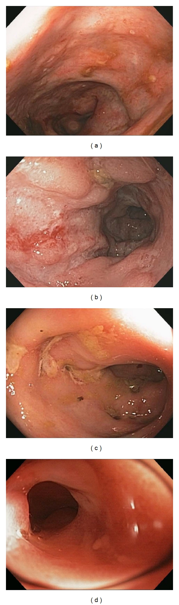
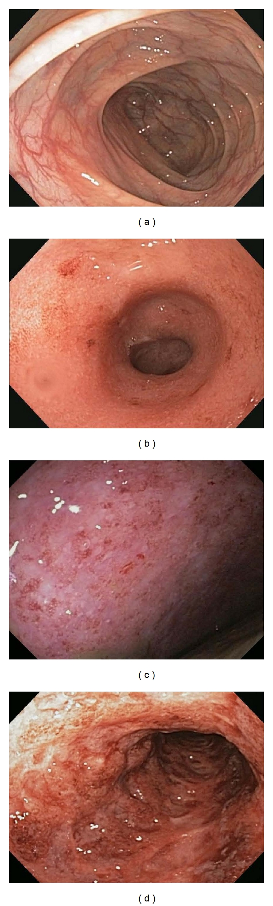
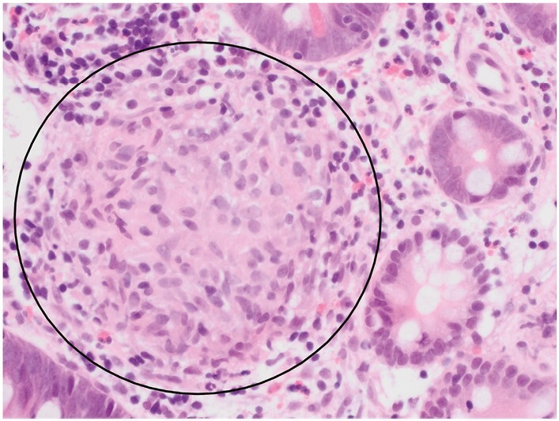
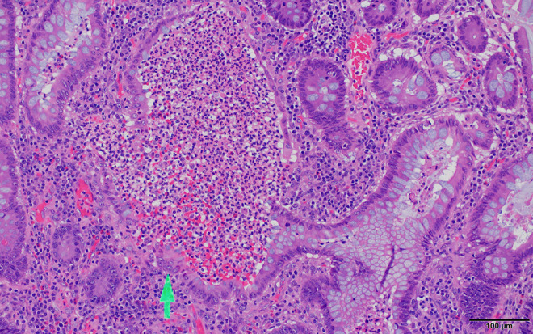
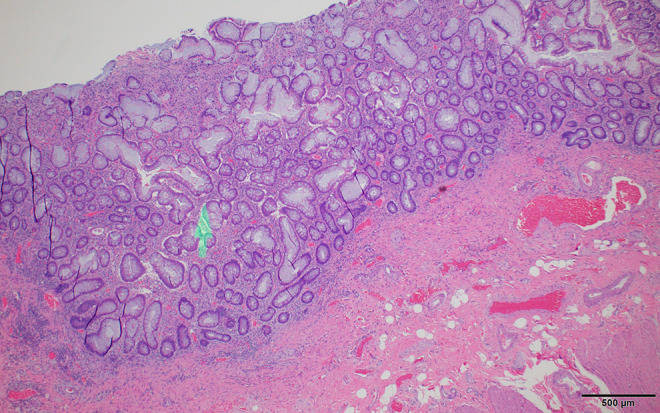
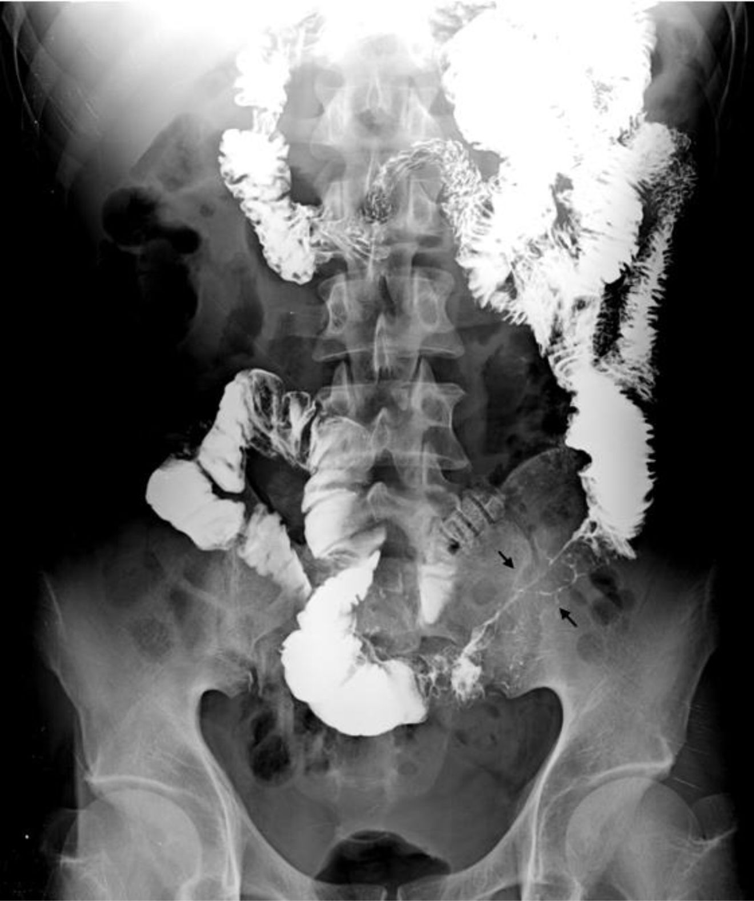
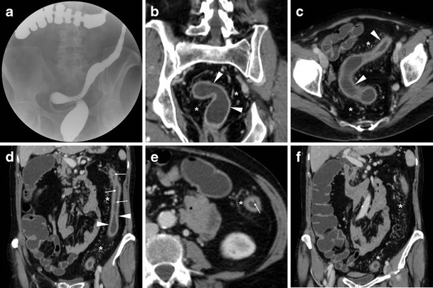

定義與定位
這個病是什麼？在分類樹的哪個位置？跟隔壁的病靠什麼分開？
| 項目 | 重點 |
|---|---|
| 本質 | 基因易感（CD 與 NOD2／CARD15 相關）＋環境誘發 → 腸道菌相與黏膜免疫失衡 → 慢性復發性腸道發炎 |
| 好發族群 | 雙峰：主峰 15–30 歲、次峰 50–70 歲（部分教科書寫 60–80 歲）；台灣盛行率低於歐美但逐年上升 |
| 兩大類 | Crohn's disease、Ulcerative colitis；約 10–15% 的大腸型初診斷時無法明確歸類 → IBD-unclassified（舊稱 indeterminate colitis），多數在追蹤中歸位 |
| 分類位置 | 慢性腹瀉／血便中的「發炎型」，與感染型、缺血型、腫瘤型（CRC）並列 |
CD vs UC：一張表反查
這張表是整篇的骨幹。任何一格被講反，就是另一個病的敘述。
| 項目 | Crohn's disease | Ulcerative colitis |
|---|---|---|
| 侵犯範圍 | 口腔到肛門任何一段；約 80% 有小腸侵犯（其中約半數為迴結腸型），約 20% 只犯大腸 | 只局限大腸；可有 backwash ileitis |
| 好發段 | 末端迴腸（terminal ileum）最好發 | 典型從直腸開始、直腸幾乎都會犯（但已接受局部治療者可出現相對直腸保留、兒童 UC 肉眼直腸保留約 5%、左側 UC 可有 cecal patch——切片仍多見慢性直腸炎變化） |
| 分布型態 | 跳躍病灶（skip lesions）、病變段與正常段交錯；直腸常保留（rectal sparing） | 連續性由直腸往近端延伸，中間不留正常黏膜 |
| 發炎深度 | 穿壁性（transmural） | 只到黏膜與黏膜下層 |
| 主要症狀 | 右下腹痛、餐後絞痛、腹瀉常不帶血、體重減輕、發燒 | 血便黏液便、裡急後重（tenesmus）、左下腹痛與便急 |
| 內視鏡 | 阿弗他潰瘍、縱走潰瘍、鵝卵石外觀（cobblestoning） | 瀰漫顆粒狀、血管紋消失、易脆出血、假息肉（pseudopolyps） |
| 影像 | 末端迴腸狹窄的 string sign、腸壁增厚、腸繫膜脂肪爬行 | 袋狀皺襞消失的鉛管腸（lead-pipe colon） |
| 病理 | 非乾酪性肉芽腫（non-caseating granuloma），僅約 30% 切片看得到 | 隱窩膿瘍（crypt abscess）、隱窩結構扭曲、杯狀細胞減少 |
| 肛周病變 | 常見：肛廔、肛周膿瘍、皮膚贅生物 | 罕見 |
| 特有併發症 | 瘻管、膿瘍、狹窄與腸阻塞、穿孔 | Toxic megacolon↗、大量出血 |
| 吸收不良 | 迴腸受侵 → B12 與膽鹽吸收不良、脂肪便 | 少見（大腸不負責營養吸收） |
| 吸菸 | 危險因子（惡化） | 負相關（保護） |
| 手術 | 不能根治，吻合口會復發；只切必要段落 | 全大腸直腸切除可根治大腸病灶（＋IPAA 儲袋；術後仍可能有 pouchitis／cuffitis，殘留 cuff 仍需追蹤） |
| 血清抗體 | ASCA (+) | p-ANCA (+) |
| 大腸癌風險 | 侵犯大腸範圍夠廣時與 UC 相當 | 隨病程與範圍上升 |
| Crohn disease | Ulcerative colitis |
|---|---|
 |
 |
| Aphthous／縱走潰瘍、鵝卵石黏膜、狹窄；病灶呈 patchy，間隔正常黏膜 | 輕症為血管紋消失、顆粒狀充血；重症出現潰瘍、滲出與自發出血，病灶呈連續分布 |
病因與機制
為什麼會發生？病生理鏈條長什麼樣？——這一節寫好，下面的表現與併發症就不用背。
flowchart TD A["基因易感性<br/>NOD2 CARD15"] --> C["黏膜免疫失調<br/>慢性腸道發炎"] B["環境與腸道菌相失衡"] --> C C --> D["穿壁性發炎<br/>Crohn's"] C --> E["黏膜與黏膜下發炎<br/>UC"] D --> F["瘻管 膿瘍 狹窄 阻塞"] D --> G["末端迴腸受損"] G --> H["B12 與膽鹽吸收不良"] E --> I["血便 裡急後重<br/>毒性巨結腸"] classDef key fill:#263238,stroke:#000,color:#fff,font-weight:bold class F,H key
臨床表現
典型病人長什麼樣？哪些症狀是幾乎一定有、哪些是提示性的？
- CD 典型：年輕人數月的右下腹痛＋不帶血的腹瀉＋體重減輕＋間歇低燒；餐後 30–60 分鐘絞痛＝狹窄段被食物撐開
- UC 典型：血便＋黏液＋裡急後重＋便急，範圍愈廣全身症狀愈明顯；只犯直腸者可以只有便血而排便正常甚至便秘
- 提示性：CD 的肛周廔管或膿瘍先於腸道症狀出現、口腔阿弗他潰瘍；UC 的症狀嚴重度與侵犯範圍平行
- 少見但重要：以腸阻塞或腹腔膿瘍表現的 CD；以急性重症結腸炎（一天血便 ≥6 次＋至少一項全身毒性徵象（體溫 >37.8°C、心跳 >90/min、Hb <10.5 g/dL、ESR >30 mm/h））首發的 UC，可走向 Toxic megacolon↗、穿孔與 Shock
- 共通：Anemia（缺鐵＋慢性病貧血，CD 再加 B12）、生長遲滯（兒童）、靜脈血栓栓塞風險上升
→ 相關主訴流程：Abdominal pain↗、Fever
腸道外表現
記憶軸只有一條：這個表現會不會跟著腸子一起好？
| 系統 | 與腸道活動度平行（腸子緩解就會好） | 與腸道活動度不平行（要獨立處理） |
|---|---|---|
| 眼 | 鞏膜外層炎（episcleritis） | 葡萄膜炎（uveitis） |
| 皮膚 | 結節性紅斑（erythema nodosum） | 壞疽性膿皮症（pyoderma gangrenosum） |
| 關節 | 周邊關節炎 Type 1（寡關節、大關節、急性） | 周邊關節炎 Type 2（多關節、小關節、慢性）、僵直性脊椎炎、薦腸關節炎（HLA-B27 相關） |
| 肝膽 | — | 原發性硬化性膽管炎 PSC↗（偏 UC） |
| 口腔 | 阿弗他口瘡 | — |
診斷
沒有單一「一槌定音」的檢查——是內視鏡＋病理＋影像＋排除感染的組合診斷。
| 步驟 | 內容 |
|---|---|
| 先排除感染 | 糞便培養（Salmonella、Shigella、Campylobacter）、C. difficile toxin／PCR、寄生蟲；台灣一定要同時想腸結核 |
| 發炎指標 | CRP、ESR；糞便 calprotectin 是區分 IBD 與腸躁症、追蹤活動度最實用的非侵入指標 |
| 主力檢查 | Colonoscopy↗ 插到末端迴腸＋多處分段切片——一次回答分布（跳躍 vs 連續）、深度、病理 |
| 小腸評估（CD） | CT／MR enterography；膠囊內視鏡對表淺病灶敏感，但懷疑狹窄者禁用 |
| 血清學 | ASCA 偏 CD、p-ANCA 偏 UC；敏感度不足，不能單獨拿來診斷或分類 |
| 嚴重度評分 | UC 用 Mayo score（排便次數、直腸出血、內視鏡表現、醫師整體評估四類）；CD 用 CDAI（症狀日記、理學發現、實驗室數值等類別組成）——記名稱與由哪幾類組成即可 |
| 急性重症時 | 腹部 X 光看橫結腸擴張 >6 cm（Toxic megacolon↗）；此時不做全大腸鏡，只做不打氣的軟式乙狀結腸鏡取樣 |
| CD：非乾酪性肉芽腫 | UC：隱窩膿瘍 | UC：慢性隱窩結構扭曲 |
|---|---|---|
 |
 |
 |
| 緊密的 epithelioid histiocyte 團塊，中央無乾酪化壞死 | 嗜中性球聚集於 crypt lumen | crypt 分枝、間距不規則與 goblet cell／mucin 減少 |
| CD：string sign | UC：lead-pipe colon |
|---|---|
 |
 |
| 末端迴腸長段嚴重狹窄，只剩細線狀顯影 | 結腸袋消失，腸管僵直、縮短而呈鉛管狀 |
鑑別診斷
要跟誰分清楚？靠什麼分？
| 要排除的 | 支持它的線索 | 怎麼排除 |
|---|---|---|
| Clostridioides difficile colitis↗ | 近期抗生素或住院；IBD 病人本身就是高風險族群，任何急性惡化都可能是它 | 糞便 toxin／PCR——每一次惡化都要驗，不是只在新病人驗 |
| Tuberculosis↗（腸結核） | 台灣不罕見；同樣好犯迴盲部、同樣有肉芽腫 | 乾酪性肉芽腫＋抗酸菌染色／PCR、胸部 X 光、IGRA；潰瘍走向橫走（CD 是縱走）、迴盲瓣呈開口固定變形 |
| 急性感染性腸炎 | 起病急、旅遊或食物史；Entamoeba 會做出很像 UC 的潰瘍 | 糞便培養與鏡檢；病程長短是最好用的分界 |
| CRC | 年長、進行性排便習慣改變、體重減輕、局部狹窄 | 大腸鏡切片；長病程 IBD 本身也會長癌 |
| Behçet disease | 反覆口腔＋生殖器潰瘍、眼炎；迴盲部單顆深而圓的潰瘍 | 全身表現＋潰瘍型態 |
| 缺血性腸炎 | 年長、心血管病史；病灶落在脾曲與乙狀結腸等分水嶺區 | 病史＋分布，通常自限 |
| 腸躁症 | 無夜間症狀、無體重減輕、無貧血與發炎指標上升 | 糞便 calprotectin 正常基本上就可放心 |
治療
先分「誘導緩解」與「維持緩解」兩件事——很多藥只能做其中一件。
| 階層 | 藥物 | 用在哪一型、哪一階段 |
|---|---|---|
| 5-ASA | mesalamine、sulfasalazine | UC 的第一線，輕中度可同時誘導與維持；直腸炎用塞劑、左側大腸用灌腸＋口服。對 CD（尤其小腸病灶）效果有限，不作為 CD 的維持治療 |
| 類固醇 | prednisolone 口服；重症靜脈；budesonide 用於迴盲部 CD（首渡代謝高、全身副作用少） | 中重度的誘導緩解。只誘導、不維持——達到緩解後必須減量停用 |
| 免疫調節劑 | azathioprine／6-MP、methotrexate | 類固醇依賴或無效時的維持主力，起效慢（2–3 個月）。AZA／6-MP 用前驗 TPMT／NUDT15（NUDT15 變異在東亞族群特別重要，會造成嚴重骨髓抑制）；MTX 對 CD 有證據、UC 較弱，懷孕為絕對禁忌 |
| 生物製劑：anti-TNF | infliximab、adalimumab | 中重度 CD 與 UC 的誘導＋維持；瘻管型 CD 效果最好、是首選；急性重症 UC 靜脈類固醇無效時的搶救。常與 AZA 併用以提高血中濃度、減少抗藥抗體 |
| 生物製劑：其他機轉 | vedolizumab（抗 α4β7，作用僅限腸道、全身免疫抑制最少）、ustekinumab／risankizumab（IL-12/23、IL-23） | 抗 TNF 失敗或不耐受者；感染風險考量高（年長、共病多）時 vedolizumab 尤其合適 |
| 小分子 | JAK 抑制劑 tofacitinib、upadacitinib；S1P 調節劑 ozanimod（UC） | 口服、起效快，適合難治型；代價是帶狀疱疹、血栓與心血管事件風險 |
| 手術 | UC：全大腸直腸切除＋IPAA 儲袋，可根治大腸病灶（術後 pouchitis 累積約 50%，殘留 cuff 仍需追蹤）；CD：只切必要段落，不能根治、吻合口會復發 | UC 適應症：藥物無效的重症、毒性巨結腸、無法內視鏡處理的異型增生或癌。CD 適應症：纖維化狹窄造成阻塞、瘻管、膿瘍、藥物無效 |
併發症與預後
- CD 要盯的：狹窄與腸阻塞、腹腔內膿瘍、瘻管、肛周廔管、B12 與 ADEK 缺乏、膽結石、草酸鈣腎結石、短腸症候群
- UC 要盯的：Toxic megacolon↗、大量下消化道出血、穿孔（可走向 Shock）
- 共通：CRC、靜脈血栓栓塞、骨質疏鬆、Anemia、PSC↗ 相關的膽道疾病與膽管癌
- 預後：兩病都不會自然痊癒，目標是「無類固醇的長期緩解＋黏膜癒合」。CD 的 10 年累積手術率在生物製劑普及前約 40–55%，2000 年後世代已降至約 25–30%；UC 的 10 年大腸切除率約 10–15%，且多數研究顯示並未因生物製劑而明顯下降（與 CD 的對比常考）
大腸癌監測
| 情境 | 何時開始 | 間隔 |
|---|---|---|
| UC（直腸炎以外）或 CD 侵犯 ≥1/3 大腸（ACG 寫 "at least one-third"、BSG 寫 ">30%"、AGA 2021 以「<1/3」為最低風險——三者實質相同） | 確診後 8 年（AGA 2021 寫確診後 8–10 年；ECCO 才以症狀出現起算） | 每 1–5 年依風險調整（ACG 2019 寫 1–3 年；AGA 2021 對持續緩解、黏膜癒合且連續兩次陰性者可延長至 5 年） |
| 合併 PSC↗ | PSC 診斷當下就開始 | 每年一次 |
| 高風險（內視鏡仍有中重度發炎、一等親 <50 歲罹 CRC、假息肉多到看不清黏膜、5 年內曾有低度異型增生） | 同上 | 每年一次 |
| 單純直腸炎、CD 侵犯不到 1/3 大腸 | 風險未明顯上升 | 依一般族群篩檢即可 |
禁忌與陷阱
相關連結
- CRC — 長期黏膜發炎的終點；監測策略看範圍與病程，不看病名
- PSC↗ — 最重要的「不平行」腸外表現，也是 CRC 與膽管癌的風險放大器
- Cirrhosis、Jaundice — PSC 走下去的兩個結果
- Toxic megacolon↗ — UC 最急的併發症，止瀉藥與抗膽鹼藥的禁忌就是為它而設
- Tuberculosis↗ — 最像 CD 的鑑別診斷，也是生物製劑前必篩項目
- Clostridioides difficile colitis↗ — 每一次惡化都要先排除
- Colonoscopy↗ — 診斷、分類與癌症監測的主力
- Anemia — 缺鐵、慢性病貧血、B12 缺乏三種機轉可以同時存在
- Acute pancreatitis — thiopurine 與 5-ASA 的藥物性副作用
- Gout — allopurinol 與 thiopurine 的致命交互作用
- Abdominal pain↗、Fever、Shock — 主訴與急症端的入口
- 禁忌選項 — 跨科禁忌的通則整理